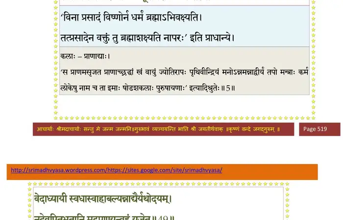
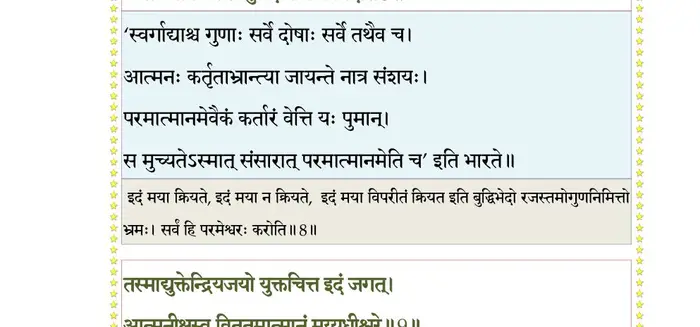
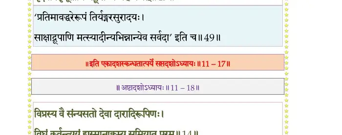

स्कन्ध 11 · अध्याय 17
श्लोक १
उद्धव उवाच–
यस्त्वयाऽभिहितः पूर्वं धर्मस्त्वद्भक्तिलक्षणः ।
वर्णाश्रमाचारवतां सर्वेषां द्विपदामपि ।। १ ।।
यस्त्वयाऽभिहितः पूर्वं धर्मस्त्वद्भक्तिलक्षणः ।
वर्णाश्रमाचारवतां सर्वेषां द्विपदामपि ।। १ ।।
श्लोक २
यथाऽनुष्ठीयमानेन त्वयि भक्तिर्नृणां भवेत् ।
स्वधर्मेणारविन्दाक्ष तन्ममाख्यातुमर्हसि ।। २ ।।
स्वधर्मेणारविन्दाक्ष तन्ममाख्यातुमर्हसि ।। २ ।।
श्लोक ३
पुरा किल महाबाहो धर्मं परमकं भवान् ।
यमाह त्वयिभक्तेभ्यो ब्राह्मणेभ्यश्च माधव ।। ३ ।।
यमाह त्वयिभक्तेभ्यो ब्राह्मणेभ्यश्च माधव ।। ३ ।।
श्लोक ४
स इदानीं सुमहता कालेनामित्रकर्शन ।
प्रायोऽन्तर्भविता मर्त्यलोके प्रागनुशासितः ।। ४ ।।
प्रायोऽन्तर्भविता मर्त्यलोके प्रागनुशासितः ।। ४ ।।
श्लोक ५
वक्ता कर्ताऽविता नान्यो धर्म(र्म्य)स्याच्युत ते भुवि ।
सभायामपि वैरिञ्च्यां यत्र मूर्तिधराः कलाः ।। ५ ।।
सभायामपि वैरिञ्च्यां यत्र मूर्तिधराः कलाः ।। ५ ।।
भागवततात्पर्यनिर्णय

श्लोक ६
कर्त्राऽवित्रा प्रवक्त्रा च (कर्ताऽविता प्रवक्ता) भवता मधुसूदन ।
त्यक्ते महीतले देव विनष्टं कः प्रवक्ष्यति ।। ६ ।।
त्यक्ते महीतले देव विनष्टं कः प्रवक्ष्यति ।। ६ ।।
श्लोक ७
त्वमतः सर्वधर्मज्ञ धर्मस्त्वद्भक्तिलक्षणः ।
यथा यस्य विधीयेत तथा वर्णय मेऽच्युत ।। ७ ।।
यथा यस्य विधीयेत तथा वर्णय मेऽच्युत ।। ७ ।।
श्लोक ८
बादरायणिरुवाच–
इत्थं तु भृत्यमुख्येन पृष्टः स भगवान् हरिः ।
प्रीतः क्षेमाय मर्त्यानां धर्मानाह सनातनान् ।। ८ ।।
इत्थं तु भृत्यमुख्येन पृष्टः स भगवान् हरिः ।
प्रीतः क्षेमाय मर्त्यानां धर्मानाह सनातनान् ।। ८ ।।
श्लोक ९
श्रीभगवानुवाच–
धर्म्य एष तव प्रश्नो नैःश्रेयसकरो नृणाम् ।
वर्णाश्रमाचारवतां तमु(तदु)द्धव निबोध मे।। ९ ।।
धर्म्य एष तव प्रश्नो नैःश्रेयसकरो नृणाम् ।
वर्णाश्रमाचारवतां तमु(तदु)द्धव निबोध मे।। ९ ।।
श्लोक १०
आदौ कृतयुगे वर्णो नृणां हंस इति स्मृतः ।
कृतकृत्याः प्रजा जात्या तस्मात् कृतयुगं विदुः।। १० ।।
कृतकृत्याः प्रजा जात्या तस्मात् कृतयुगं विदुः।। १० ।।
श्लोक ११
वेदः प्रणव एवाग्रे धर्मोऽहं वृषरूपधृक् ।
उपासते तपोनिष्ठा हंसा मां मुक्तकिल्बिषाः।। ११ ।।
उपासते तपोनिष्ठा हंसा मां मुक्तकिल्बिषाः।। ११ ।।
श्लोक १२
त्रेतामुखे महाभाग प्राणान्मे हृदयात् त्रयी ।
विद्या प्रादुरभूत् तस्या अहमासं त्रिवृन्मुखः।। १२ ।।
विद्या प्रादुरभूत् तस्या अहमासं त्रिवृन्मुखः।। १२ ।।
श्लोक १३
विप्रक्षत्रियविट्शूद्रा मुखबाहूरुपादजाः ।
वैराजात् पुरुषाज्जाता य आत्माचारलक्षणाः।। १३ ।।
वैराजात् पुरुषाज्जाता य आत्माचारलक्षणाः।। १३ ।।
श्लोक १४
गृहाश्रमो जघनतो ब्रह्मचर्यं हृदो मम ।
वक्षःस्थलाद् वने वासो न्यासः शीर्षण्यवस्थितः।। १४ ।।
वक्षःस्थलाद् वने वासो न्यासः शीर्षण्यवस्थितः।। १४ ।।
श्लोक १५
वर्णानामाश्रमाणां च जन्मभूम्यनुसारतः ।
आसन् प्रकृतयो नॄणां नीचैर्नीचोत्तमोत्तमाः।। १५ ।।
आसन् प्रकृतयो नॄणां नीचैर्नीचोत्तमोत्तमाः।। १५ ।।
श्लोक १६
शमो दमस्तपः शौचं सन्तोषः क्षान्तिरार्जवम् ।
मद्भक्तिश्च दया सत्यं ब्रह्मप्रकृतयस्त्विमाः ।। १६ ।।
मद्भक्तिश्च दया सत्यं ब्रह्मप्रकृतयस्त्विमाः ।। १६ ।।
श्लोक १७
तेजो बलं धृतिः शौर्यं तितिक्षौदार्यमुद्यमः ।
स्थैर्यं ब्रह्मण्यमैश्वर्यं क्षत्रप्रकृतयस्त्विमाः ।। १७ ।।
स्थैर्यं ब्रह्मण्यमैश्वर्यं क्षत्रप्रकृतयस्त्विमाः ।। १७ ।।
श्लोक १८
आस्तिक्यं दाननिष्ठा च अदम्भो विप्रसेवनम् ।
अतुष्टिरर्थोपचये वैश्यप्रकृतयस्त्विमाः ।। १८ ।।
अतुष्टिरर्थोपचये वैश्यप्रकृतयस्त्विमाः ।। १८ ।।
श्लोक १९
शुश्रूषणं द्विजगवां देवानां चाप्यमायया ।
तत्र लब्धेन सन्तोषः शूद्रप्रकृतयस्त्विमाः।। १९ ।।
तत्र लब्धेन सन्तोषः शूद्रप्रकृतयस्त्विमाः।। १९ ।।
श्लोक २०
अशौचमनृतं स्तेयं नास्तिक्यं शुष्कविग्रहः ।
कामः क्रोधश्च तर्षश्च स्वभावोऽन्तेऽवसायिनाम्।। २० ।।
कामः क्रोधश्च तर्षश्च स्वभावोऽन्तेऽवसायिनाम्।। २० ।।
श्लोक २१
अहिंसा सत्यमस्तेयमकामक्रोधलोभता ।
भूतप्रियहितेहा च धर्मोऽयं सार्ववर्णिकः।। २१ ।।
भूतप्रियहितेहा च धर्मोऽयं सार्ववर्णिकः।। २१ ।।
श्लोक २२
द्वितीयं प्राप्यानुपूर्व्याज्जन्मोपनयनं द्विजः ।
वसन् गुरुकुले दान्तो ब्रह्माधीयीत वाग्यतः।। २२ ।।
वसन् गुरुकुले दान्तो ब्रह्माधीयीत वाग्यतः।। २२ ।।
श्लोक २३
मेखलाजिनदण्डाक्षब्रह्मसूत्रकमण्डलून् ।
जटिलोऽधौतदन्तश्च वासः पीठकुशान् दधत्।। २३ ।।
जटिलोऽधौतदन्तश्च वासः पीठकुशान् दधत्।। २३ ।।
श्लोक २४
स्नानभोजनहोमेषु जपोच्चारे च वाग्यतः ।
न छिन्द्यान्नखरोमाणि कक्षोपस्थगतान्यपि।। २४ ।।
न छिन्द्यान्नखरोमाणि कक्षोपस्थगतान्यपि।। २४ ।।
श्लोक २५
रेतो नावकिरेज्जातु ब्रह्मव्रतधरः स्वयम् ।
अवकीर्णेऽवगाह्याप्सु यतासुस्त्रिपदीं जपेत्।। २५ ।।
अवकीर्णेऽवगाह्याप्सु यतासुस्त्रिपदीं जपेत्।। २५ ।।
श्लोक २६
अग्न्यर्काचार्यगोविप्रगुरुवृद्धसुरान् नमेत् ।
समाहित उपासीत सन्ध्ये च यतवाग् जपेत् ।। २६ ।।
समाहित उपासीत सन्ध्ये च यतवाग् जपेत् ।। २६ ।।
श्लोक २७
आचार्यं मां विजानीयान्नावमन्येत कर्हिचित् ।
न मर्त्यबुद्ध्याऽसूयेत सर्वदेवमयो गुरुः ।। २७ ।।
न मर्त्यबुद्ध्याऽसूयेत सर्वदेवमयो गुरुः ।। २७ ।।
श्लोक २८
सायं प्रातरुपानीय भैक्ष्यं तस्मै निवेदयेत् ।
यच्चान्यदप्यनुज्ञात उपभुञ्जीत संयतः ।। २८ ।।
यच्चान्यदप्यनुज्ञात उपभुञ्जीत संयतः ।। २८ ।।
श्लोक २९
शुश्रूषमाण आचार्यं सदोपासीत नीचवत् ।
यानशय्यासनस्थाने नातिदूरः कृताञ्जलिः।। २९ ।।
यानशय्यासनस्थाने नातिदूरः कृताञ्जलिः।। २९ ।।
श्लोक ३०
एवं वृतो गुरुकुले वसेद् भोगविवर्जितः ।
विद्या समाप्यते यावद् बिभ्रद् व्रतमखण्डितम्।। ३० ।।
विद्या समाप्यते यावद् बिभ्रद् व्रतमखण्डितम्।। ३० ।।
श्लोक ३१
यद्यसौ च्छन्दसां लोकमारोक्ष्यन् ब्रह्मविष्टपम् ।
गुरवे विन्यसेद् देहं स्वाध्यायार्थे बृहद्व्रतः।। ३१ ।।
गुरवे विन्यसेद् देहं स्वाध्यायार्थे बृहद्व्रतः।। ३१ ।।
श्लोक ३२
अग्नौ गुरावात्मनि च सर्वभूतेषु मां परम् ।
अपृथग्धीरुपासीत ब्रह्मवर्चस्व्यकल्मषः।। ३२ ।।
अपृथग्धीरुपासीत ब्रह्मवर्चस्व्यकल्मषः।। ३२ ।।
श्लोक ३३
स्त्रीणां निरीक्षणस्पर्शसल्लापक्ष्वेलनादिकम् ।
प्राणिनो मिथुनीभूतानगृहस्थोऽग्रतस्त्यजेत्।। ३३ ।।
प्राणिनो मिथुनीभूतानगृहस्थोऽग्रतस्त्यजेत्।। ३३ ।।
श्लोक ३४
शौचमाचमनं स्नानं सन्ध्योपासनमार्जवम् ।
तीर्थसेवा जपोऽस्पृश्याभक्ष्यासम्भाष्यवर्जनम्।। ३४ ।।
तीर्थसेवा जपोऽस्पृश्याभक्ष्यासम्भाष्यवर्जनम्।। ३४ ।।
श्लोक ३५
सर्वाश्रमप्रयुक्तोऽयं नियमः कुलनन्दन ।
मद्भावः सर्वभूतेषु मनोवाक्कायसंयमः ।। ३५ ।।
मद्भावः सर्वभूतेषु मनोवाक्कायसंयमः ।। ३५ ।।
श्लोक ३६
एवं ब्रह्मव्रतधरो ब्राह्मणोऽग्निरिव ज्वलन् ।
मद्भक्तस्तीव्रतपसा दग्धकर्माशयोऽमलः।। ३६ ।।
मद्भक्तस्तीव्रतपसा दग्धकर्माशयोऽमलः।। ३६ ।।
श्लोक ३७
अथानन्तरमावेक्ष्यन् यथाजिज्ञासितागमः ।
गुरवे दक्षिणां दत्वा स्नायाद् गुर्वनुमोदितः।। ३७ ।।
गुरवे दक्षिणां दत्वा स्नायाद् गुर्वनुमोदितः।। ३७ ।।
भागवततात्पर्यनिर्णय

श्लोक ३८
गृहं वनं चोपविशेत् प्रव्रजेद् वा द्विजोत्तमः ।
आश्रमादाश्रमं गच्छेन्नान्यथा मत्परश्चरेत्।। ३८ ।।
आश्रमादाश्रमं गच्छेन्नान्यथा मत्परश्चरेत्।। ३८ ।।
श्लोक ३९
गृहार्थी सदृशीं भार्यामुद्वहेदजुगुप्सिताम् ।
यवीयसीं तु वयसा यां सवर्णामनुक्रमात्।। ३९ ।।
यवीयसीं तु वयसा यां सवर्णामनुक्रमात्।। ३९ ।।
श्लोक ४०
इज्याध्ययनदानानि सर्वेषां च द्विजन्मनाम् ।
प्रतिग्रहोऽध्यापनं च ब्राह्मणस्यैव याजनम्।। ४० ।।
प्रतिग्रहोऽध्यापनं च ब्राह्मणस्यैव याजनम्।। ४० ।।
श्लोक ४१
प्रतिग्रहं मन्यमानस्तपस्तेजोयशोनुदम् ।
अन्याभ्यां चैव जीवेत शिलैर्वा दोषदृक् तयोः।। ४१ ।।
अन्याभ्यां चैव जीवेत शिलैर्वा दोषदृक् तयोः।। ४१ ।।
श्लोक ४२
ब्राह्मणस्य च देहोऽयं क्षुद्रकामाय नेष्यते ।
कृच्छ्राय तपसे चेह प्रेत्यानन्तसुखाय च।। ४२ ।।
कृच्छ्राय तपसे चेह प्रेत्यानन्तसुखाय च।। ४२ ।।
श्लोक ४४
शिलोञ्छवृत्त्या परितुष्टचित्तो धर्मं महान्तं विरजं जुषाणः ।
मय्यर्पितात्मा गृह एव तिष्ठन् नातिप्रसक्तः समुपैति शान्तिम्।। ४३
समुद्धरन्ति ये विप्रं सीदन्तं मत्परायणम् ।
तानुद्धरिष्ये नचिरादापदो नौरिवार्णवात्।। ४४ ।।
मय्यर्पितात्मा गृह एव तिष्ठन् नातिप्रसक्तः समुपैति शान्तिम्।। ४३
समुद्धरन्ति ये विप्रं सीदन्तं मत्परायणम् ।
तानुद्धरिष्ये नचिरादापदो नौरिवार्णवात्।। ४४ ।।
श्लोक ४५
सर्वाः समुद्धरेद् राजा पितेव व्यसनात् प्रजाः ।
आत्मानमात्मना धीरो यथा गजपतिर्गजान्।। ४५ ।।
आत्मानमात्मना धीरो यथा गजपतिर्गजान्।। ४५ ।।
श्लोक ४६
एवंविधो नरपतिर्विमानेनार्कवर्चसा ।
विधूयेहाशुभं कृत्स्नमिन्द्रेण सह मोदते।। ४६ ।।
विधूयेहाशुभं कृत्स्नमिन्द्रेण सह मोदते।। ४६ ।।
श्लोक ४७
सीदन् विप्रो वणिग्वृत्त्या पण्यैरेवापदं तरेत् ।
खड्गेन वा पराक्रन्तो(ऽऽपदाक्रान्तो) न श्ववृत्त्या कथञ्चन।। ४७ ।।
खड्गेन वा पराक्रन्तो(ऽऽपदाक्रान्तो) न श्ववृत्त्या कथञ्चन।। ४७ ।।
श्लोक ४८
वैश्यवृत्त्या तु राजन्यो जीवेन्मृगययाऽऽपदि ।
चरेद् वा विप्ररूपेण न श्ववृत्त्या कथञ्चन।। ४८ ।।
चरेद् वा विप्ररूपेण न श्ववृत्त्या कथञ्चन।। ४८ ।।
श्लोक ४९
शूद्रवृत्तिं भजेद् वैश्यः शूद्रो वै कारुकक्रियाम् ।
कृच्छ्रान्मुक्तो न गर्ह्येण वृत्तिं लिप्सेत कर्मणा।। ४९ ।।
कृच्छ्रान्मुक्तो न गर्ह्येण वृत्तिं लिप्सेत कर्मणा।। ४९ ।।
श्लोक ५०
वेदाध्यायी स्वधास्वाहाबल्यन्नाद्यैर्यथोदयम् ।
देवर्षिपितृभूतानि (नृदेवपितृभूतानि) मद्रूपाण्यन्वहं यजेत् ।। ५० ।।
देवर्षिपितृभूतानि (नृदेवपितृभूतानि) मद्रूपाण्यन्वहं यजेत् ।। ५० ।।
भागवततात्पर्यनिर्णय

श्लोक ५१
यदृच्छयोपपन्नेन शुक्लेनोपार्जितेन वा ।
धनेनापीडयन् भृत्यान् मां यजेतान्वहं विभुम्।। ५१ ।।
धनेनापीडयन् भृत्यान् मां यजेतान्वहं विभुम्।। ५१ ।।
श्लोक ५२
कुटुम्बेषु न सज्जेत न प्रमाद्येत् कुटुम्ब्यपि ।
विपश्चिन्नश्वरं पश्येददृष्टमपि दृष्टवत्।। ५२ ।।
विपश्चिन्नश्वरं पश्येददृष्टमपि दृष्टवत्।। ५२ ।।
श्लोक ५३
पुत्रदाराप्तबन्धूनां सङ्गमः पान्थसङ्गमः ।
अनुदेहं भवन्त्येते स्वप्नो निद्रानुगो यथा।। ५३ ।।
अनुदेहं भवन्त्येते स्वप्नो निद्रानुगो यथा।। ५३ ।।
श्लोक ५४
इत्थं परिमृशन् युक्तो गृहेष्वतिथिवद् वसेत् ।
न गृहैरनुबध्येत निर्ममो निरहंकृतिः।। ५४ ।।
न गृहैरनुबध्येत निर्ममो निरहंकृतिः।। ५४ ।।
श्लोक ५५
कर्मभिर्गृहमेधीयैरिष्ट्वा मामेव भक्तिमान् ।
तिष्ठेद् वनं वोपविशेत् प्रज्ञावान् वा परिव्रजेत्।। ५५ ।।
तिष्ठेद् वनं वोपविशेत् प्रज्ञावान् वा परिव्रजेत्।। ५५ ।।
श्लोक ५६
यस्त्वासक्तमतिर्गेहे पुत्रवित्तेषणातुरः ।
स्त्रैणः कृपणधीर्मूढो ममाहमिति बध्यते।। ५६ ।।
स्त्रैणः कृपणधीर्मूढो ममाहमिति बध्यते।। ५६ ।।
श्लोक ५७
अहो मे पितरौ वृद्धौ भार्या बालात्मजा सती ।
अनाथा मामृते दीनाः कथं जीवन्ति दुःखिताः।। ५७ ।।
अनाथा मामृते दीनाः कथं जीवन्ति दुःखिताः।। ५७ ।।
श्लोक ५८
एवं गृहाशयाऽऽक्षिप्तहृदयो मूढधीरयम् ।
अतृप्तस्ताननुध्यायन् मृतोऽन्धं विशते तमः।। ५८ ।।
अतृप्तस्ताननुध्यायन् मृतोऽन्धं विशते तमः।। ५८ ।।
।। इति श्रीमद्भागवते एकादशस्कन्धे सप्तदशोऽध्यायः ।।